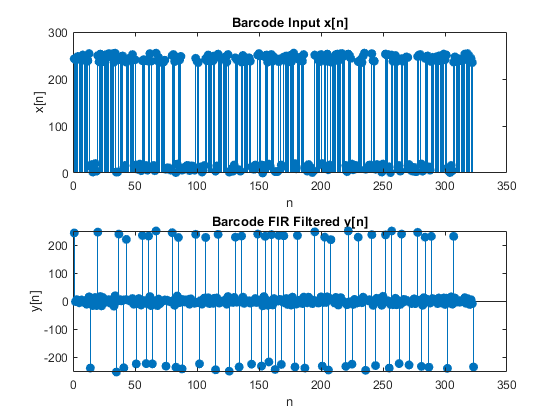
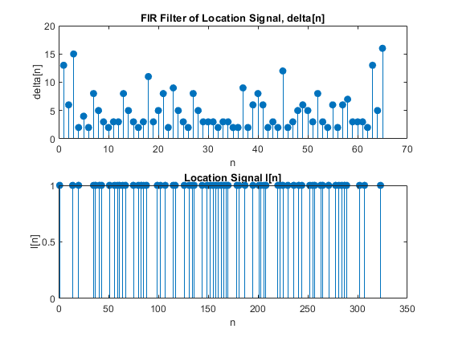

Contents
- MATLAB Bar Code Detection and Decoding - Spencer Durrant
- e) Prove that the total width of a valid 12-digit bar code is equal to
- f) Next estimate theta1, must perform estimate for every subset of
- g) Now use estimated theta1 to convert delta_n into relative sizes
- h) Ready to decode using decodeUPC. Takes 59 integers only, call for
MATLAB Bar Code Detection and Decoding - Spencer Durrant
The UPC (Universal Product Code) uses widths of bars to encode numbers in a bar code. The UPC will have 30 black bars and 29 white bars for a total of 59. Bars are always alternating, and have four widths measured by the thinnest bar being 1 unit. Total width of the UPC bar code is 95 units.
function [] = upcProcess(img_str, std_thresh)
% Read in typical bar code image img = imread(img_str); [rows, cols] = size(img); middle = round(rows / 2); xn = img(middle, :); % Filter signal with a first-difference FIR filter and plot bb = [1, -1]; yn = firfilt(bb, xn); figure; subplot(2, 1, 1); stem(xn, 'filled'); title('x[n]'); xlabel('n'); ylabel('x[n]'); subplot(2, 1, 2); stem(yn, 'filled'); title('y[n]'); xlabel('n'); ylabel('y[n]'); % Create sparse detected signal d[n] by comparing magnitude |y[n]| to a % threshold threshold = 128; dn = abs(yn) > threshold; % Then convert the sparse signal into a location signal l[n] by using find ln = find(dn, cols, "first"); figure; stem(ln, ones(size(ln)), 'filled'); title('l[n]'); xlabel('n'); ylabel('l[n]'); % Apply a first-difference filter to location signal, call output delta_n. % These differences should be widths of the bars delta_n = firfilt(bb, ln); delta_n = diff(ln); figure; subplot(2, 1, 1); stem(delta_n, 'filled'); title('delta[n]'); xlabel('n'); ylabel('delta[n]'); subplot(2, 1, 2); stem(ln, ones(size(ln)), 'filled'); title('l[n]'); xlabel('n'); ylabel('l[n]'); if img_str == "HP110v3.png" disp("In the delta[n] plot there are four distinct groupings: 6-9, 14-17, 24-26, and greater than 30.") disp("Using intuition from the UPC standard, 30 / 4 rounded up will result in 8. So we can make a guess that a unit width is close to 8.") end
In the delta[n] plot there are four distinct groupings: 6-9, 14-17, 24-26, and greater than 30. Using intuition from the UPC standard, 30 / 4 rounded up will result in 8. So we can make a guess that a unit width is close to 8.
e) Prove that the total width of a valid 12-digit bar code is equal to
95*theta1 where theta1 is the basic width. A: let the basic width be 1. Every digit must sum to 7, and there are 12 digits for 84 units. Then both the beginning and end are delimited with 1-1-1, and a middle separator of 1-1-1-1-1. This is another 3*theta1 + 3*theta1 + 5*theta1. Summing all these together is 84 + 3 + 3 + 5 = 95
f) Next estimate theta1, must perform estimate for every subset of
length 59 noting that ln and delta_n are greater than 59.
thetas = []; % Find all potential theta1's for each possible sequence for i = 1:length(delta_n) - 58 sequence = delta_n(i:i+58); % Drop thetas with too high std sequence_std = std(sequence); if sequence_std <= std_thresh total_width = sum(sequence); thetas = [thetas, total_width / 95]; end end % Plot potential theta1 values figure; plot(thetas, 'o-'); title('Potential Theta1 Values'); xlabel('Sequence Index'); ylabel('Potential Theta1'); % Calculate the mean theta theta1 = mean(thetas); fprintf("Mean Theta1: %.4f\n", theta1);
Mean Theta1: 8.1904
Mean Theta1: 2.7832
g) Now use estimated theta1 to convert delta_n into relative sizes
result should be integers equal to 1, 2, 3, and 4
bar_code = round(delta_n / theta1); fprintf("Verifying that the bar code is integers 1-4:\n"); fprintf("%d ", bar_code.'); fprintf('\n');
Verifying that the bar code is integers 1-4: 2 2 4 2 2 1 1 1 1 2 1 3 1 2 1 3 2 1 2 2 1 3 1 2 1 2 1 3 3 2 1 1 1 1 1 1 1 1 1 3 2 1 2 3 1 3 2 1 1 2 2 2 1 1 1 1 4 1 2 3 1 1 1 1 2 2 4 2 3
Verifying that the bar code is integers 1-4: 5 2 5 1 1 1 3 2 1 1 1 1 3 2 1 1 1 4 1 2 3 1 3 2 1 1 3 2 1 1 1 1 1 1 1 1 3 1 2 3 2 1 1 1 4 1 1 2 2 2 1 3 1 1 2 1 2 3 1 1 1 1 5 2 6
h) Ready to decode using decodeUPC. Takes 59 integers only, call for
each 59 element subset
upc_length = 59; % Compute impulse response for 3 ones in a row then find first and last sum % to 3 h_ones = conv(double(bar_code == 1), [1 1 1], 'valid'); start_idx = find(h_ones == 3, 1, 'first'); end_idx = find(h_ones == 3, 1, 'last') + 2; % trim the bar code bar_code = bar_code(start_idx:end_idx); fprintf("Trimmed bar code:\n"); fprintf("%d ", bar_code.'); fprintf('\n'); valid_decode = []; if length(bar_code) > upc_length valid_start_idx = []; % Sliding window through bar_code if length is still greater than 59 for i = 1:(length(bar_code) - upc_length + 1) % Extract the current 59-element subset subset = bar_code(i : i + upc_length - 1); % Decode the subset using decodeUPC decoded_digits = decodeUPC(subset); % Check for errors (no -1 in the output) if all(decoded_digits ~= -1) valid_decode = decoded_digits; % Store the valid decode break; end end else valid_decode = decodeUPC(bar_code); end % Display the result if ~isempty(valid_decode) fprintf("Bar code for image %s:\n", img_str); disp(valid_decode); if img_str == "HP110v3.png" fprintf("Expected bar code value is: 8 8 2 7 8 0 4 5 0 1 6 5\n\n"); end else disp('No valid decode found in the given data.'); end
Trimmed bar code:
1 1 1 1 2 1 3 1 2 1 3 2 1 2 2 1 3 1 2 1 2 1 3 3 2 1 1 1 1 1 1 1 1 1 3 2 1 2 3 1 3 2 1 1 2 2 2 1 1 1 1 4 1 2 3 1 1 1 1
ssbeg =
1 1 1
Bar code for image HP110v3.png:
8 8 2 7 8 0 4 5 0 1 6 5
Expected bar code value is: 8 8 2 7 8 0 4 5 0 1 6 5
Trimmed bar code:
1 1 1 3 2 1 1 1 1 3 2 1 1 1 4 1 2 3 1 3 2 1 1 3 2 1 1 1 1 1 1 1 1 3 1 2 3 2 1 1 1 4 1 1 2 2 2 1 3 1 1 2 1 2 3 1 1 1 1
ssbeg =
1 1 1
Bar code for image OFFv3.png:
0 4 6 5 0 0 7 0 3 1 9 5
end % function upcProcess upcProcess("HP110v3.png", 8); upcProcess("OFFv3.png", 3);